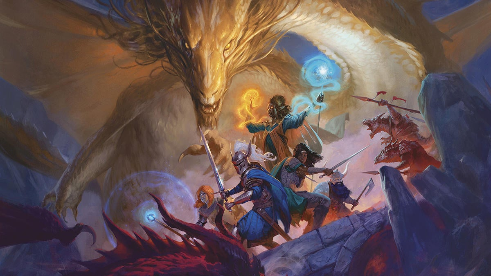
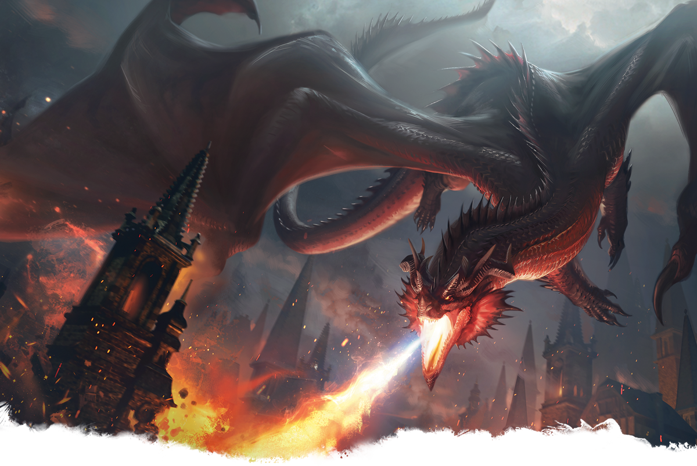
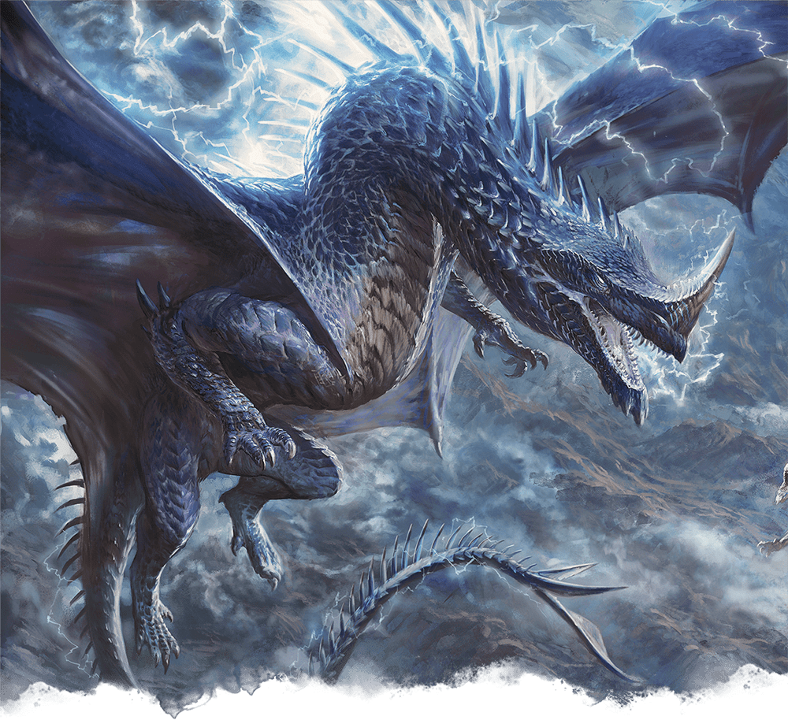
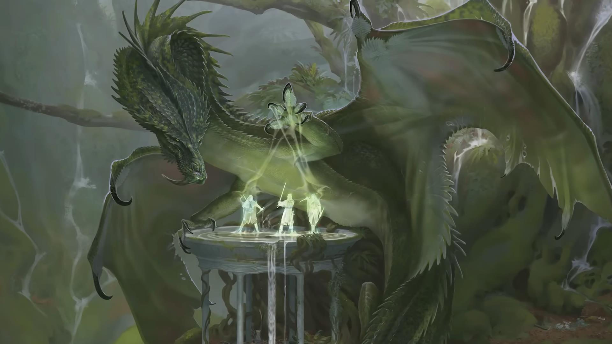
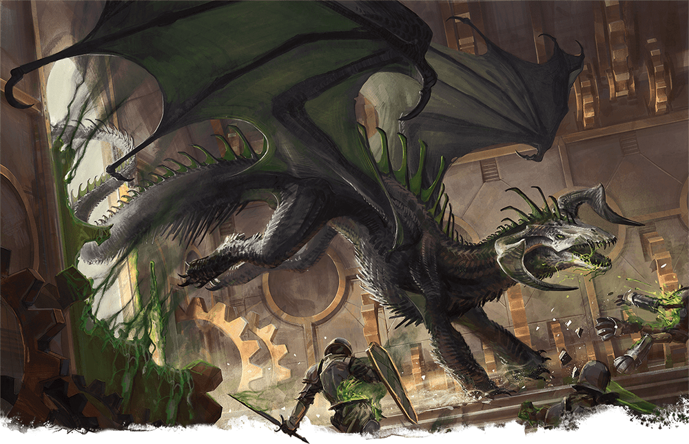
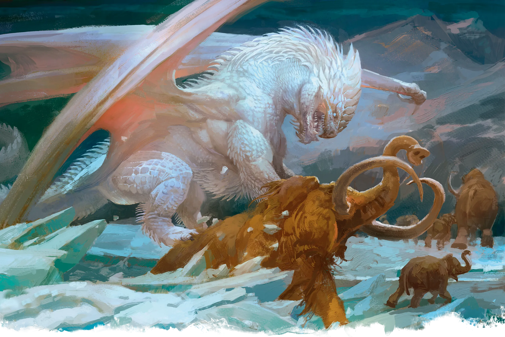

Los dragones son de las criaturas más legendarias a lo largo de los Reinos Olvidados, en este bestiario encontrarás información y consejo en caso de que tengas un encuentro desafortunado con algún dragón cromático.

Los dragones rojos toman lo que desean y reducen a cenizas cualquier cosa que se interponga en su camino. Estos dragones cromáticos tienen un deseo infinito de conseguir más: más magia, más territorio, más tesoros o cualquier otra cosa que alimente sus crueles ambiciones. Los dragones rojos hacen sus guaridas en acantilados peligrosos y volcanes. Allí, acumulan y protegen ferozmente sus grandes fortunas, y muchos recuerdan perfectamente el contenido de sus tesoros y la ubicación de todo lo que han recolectado. Si algo falta, los dragones rojos entran en furia. No descansan hasta que sus posesiones sean devueltas y los ladrones queden reducidos a cenizas. Los dragones rojos se consideran a sí mismos superiores a todos los demás dragones y, por extensión, superiores a todas las criaturas. Para ellos, saquear y conquistar es su derecho: los tesoros no pueden encontrar un lugar más honrado que en sus guaridas, y otras criaturas tienen el privilegio de servirles.

Arrogantes e imperiosos, los dragones azules son dragones cromáticos que anhelan el control y coleccionan seguidores como otros dragones acaparan tesoros. Buscan transformar sus territorios en imperios, dominios que sean temidos por las naciones. Los dragones azules tienen rasgos agudos con cuernos puntiagudos y escamas que van desde el zafiro hasta los tonos de cielos tormentosos. Habitan en desiertos y páramos, particularmente en regiones con montañas altas desde cuyos picos pueden mirar a lo lejos. Buscan guaridas cerca de sitios de poder simbólico, como las fortalezas abandonadas de gigantes, los colosos restos de imperios caídos o monumentos erigidos por sus seguidores. Los alijos de los dragones azules están llenos de tesoros de viejos reinos y obras maestras artísticas. Estos dragones no tienen interés en tesoros comunes o defectuosos, prefiriendo piedras preciosas únicas, las coronas de reyes caídos y objetos mágicos capaces de extender su influencia alrededor del mundo.

Desde las profundidades del bosque prohibido, los dragones verdes susurran maldades al mundo y manipulan la vida de quienes los escuchan. Escurridizos, engañosos y egocéntricos, estos dragones cromáticos depredan pacientemente los miedos de los seres de vida más corta, corrompiéndolos y aislándolos. Los dragones verdes podrían acechar en los laberínticos parajes silvestres durante siglos sin revelarse; incluso sus seguidores más devotos podrían conocerlos solo como la voz del bosque o un susurro en sus sueños. A pesar de su poder, la mayoría de los dragones verdes desprecian la violencia física, viendo el combate como trabajo de sirvientes y prefiriendo engañar a sus enemigos para que caigan en situaciones peligrosas o explotadoras. Estos dragones coleccionan "baratijas" que encarnan sus redes de manipulación y sirven como herramientas de extorsión, como documentos comprometedores, reliquias familiares y tesoros sentimentales.

Los dragones negros se deleitan en el sufrimiento y la ruina. Mientras que otros dragones cromáticos conspiran por poder y riqueza, estos dragones buscan destruir todo lo que ven y gobernar sobre lo que quede. Los dragones negros son criaturas aterradoras con cuernos curvados y semblantes marchitos que sugieren calaveras diabólicas. Típicamente habitan en pantanos estancados, ruinas derruidas o lugares de corrupción mágica o ambiental. Su aliento ácido marca sus dominios, erosionando los rasgos de antiguas estatuas y dejando a la naturaleza con heridas supurantes. Los dragones negros acaparan símbolos de esperanza deteriorados y reliquias de imperios caídos. Cuanto más codiciado es el tesoro, más lo valoran los dragones negros, especialmente si fueron responsables de que se perdiera.

Entre los dragones cromáticos más primitivos, los dragones blancos priorizan la supervivencia por encima de todo. La vida es dura e incierta en las extensas regiones árticas, las alturas glaciares y los mares congelados donde habitan estos dragones. Los dragones blancos protegen ferozmente sus territorios, recorriendo las frígidas regiones en busca de alimento y patrullando en busca de intrusos. La mayoría de los dragones blancos ignoran los complots de criaturas más pequeñas y de otros dragones, preocupándose únicamente por su propia supervivencia. Los dragones blancos crean guaridas para defenderse de otras criaturas árticas mortales y de las peligrosas condiciones naturales. Dentro de estos refugios, los dragones blancos acumulan testimonios de su superioridad, como cráneos monstruosos, cadáveres de rivales derrotados y curiosidades que captan su interés. Para proteger tales tesoros, los dragones blancos hacen que el hielo se forme sobre sus pilas o hunden su riqueza en pozos helados. Para los dragones blancos, cada pieza de tesoro encarna una victoria, cuyos detalles se magnifican a medida que estos dragones envejecen.